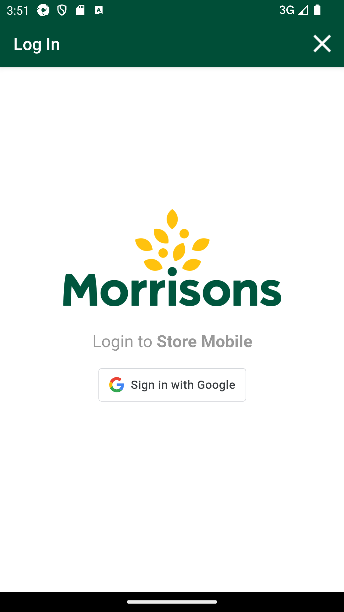

-
GLH drill down PM Gaps
3:11:03 PM / 00:31:03:644 Fail
GLH drill down PM Gaps
10.08.2024 3:11:03 PM 10.08.2024 3:42:07 PM 00:31:03:644 · #test-id=1@g55Newglh_drill_downFailVerify COMPLETE status for WAREHOUSE LocationFailVerify COMPLETE status for WAREHOUSE LocationGiven The Post Storewalk body to create Count storewalk api for Store id "8",name "BackButtonOnPetrolandOffshelf" and Items "103303063" and mode "list"When I enter Username and Password for SMA Collegue userAnd I click on login button for SMAThen I click on 'stockMngmtText' on page 'HomePagePO_New'Then I click on "Scheduled Counts"Then I click on Counts Sectionscom.morrisons.common.action.Hook.afterScenario(io.cucumber.java.Scenario)Then I click on WareHouse SectionsStep skippedThen I verify that the posted counts are displayed in Warehouse and select the countStep skippedThen verify Min detailsStep skippedThen I will enter qty "5"Step skippedThen verify that qty has been updatedStep skippedThen I will confirm CountsStep skippedThen Verify status for "BackButtonOnPetrolandOffshelf" has changed to CompleteStep skippedAnd I click on Back ButtonStep skippedAnd I click Stock Information in HotkeyStep skippedAnd I click on barcode entry ButtonStep skippedThen Enter "" number Step skippedThen I verify Capture Type as "AM Count"Step skippedAnd I verify Counted Quantity "6" same as onshelfStep skippedAnd I logout of the systemStep skippedPassTO CHANGE THE DEVICE TIMINGS AS REQUIREDPassTO CHANGE THE DEVICE TIMINGS AS REQUIREDGiven I send the time "03" and mins "30" and meridiem "pm" and current date in listThen I Change timeThen I Change dateFailVerify that the GLH Summary screen will display all specified departments and sections which are mapped to Gaps walktypeFailVerify that the GLH Summary screen will display all specified departments and sections which are mapped to Gaps walktypeWhen I enter Username and Password for SMA Collegue userAnd I click on login button for SMAThen I click on 'stockMngmtText' on page 'HomePagePO_New'Then I click on "PM Gaps"Then I click on SummaryGiven request is made to capture access token and post endpoint for user v2 for "" Then I Verify the Response Code for the following "- " is 200
com.morrisons.common.action.Hook.afterScenario(io.cucumber.java.Scenario)And I get the field value for the field "access_token"Step skippedAnd Get the generated Access Tocken for SMA app Login ServiceStep skippedGiven Post request is made to Create storewalk service for store id "8" and type "Gaps"Step skippedAnd Post Operation perform on service requestStep skippedThen Verify Create storewalk service responseStep skippedWhen Get request is made to GlhSummary api for Store id "8" and Walktype "Gaps"Step skippedThen Get Operation perform on Glh Summary service requestStep skippedAnd Get Department list from Glh Summary service response for Store id "8"Step skippedThen I Verify all departments which are mapped to Gaps walktype on UI and Service matchesStep skippedPassTS_16 Verify that the GLH Summary screen will display all departments in the specified static orderPassTS_16 Verify that the GLH Summary screen will display all departments in the specified static orderWhen I enter Username and Password for SMA Collegue userAnd I click on login button for SMAThen I click on 'stockMngmtText' on page 'HomePagePO_New'Then I click on "PM Gaps"Then I click on SummaryAnd I verify "Fruit & Veg" is displayedPassTS_17 Verify that the GLH Summary screen will display all departments with right arrow indicatorPassTS_17 Verify that the GLH Summary screen will display all departments with right arrow indicatorWhen I enter Username and Password for SMA Collegue userAnd I click on login button for SMAThen I click on 'stockMngmtText' on page 'HomePagePO_New'Then I click on "PM Gaps"Then I click on SummaryAnd I verify right arrow displayed for all department "Fruit & Veg"PassTS_18 Verify that the drill down on each department shows all sections mapped to this departmentPassTS_18 Verify that the drill down on each department shows all sections mapped to this departmentWhen I enter Username and Password for SMA Collegue userAnd I click on login button for SMAThen I click on 'stockMngmtText' on page 'HomePagePO_New'Then I click on "PM Gaps"Then I click on SummaryAnd I click "Fruit & Veg"And I verify sections "Fruit", "Horticulture","Nuts","Prepared","Salads","Veg"Pass: TS_19 Verify user is able to scan and Gaps product as Gaps in PM Gaps and maintains the default behaviour.Pass: TS_19 Verify user is able to scan and Gaps product as Gaps in PM Gaps and maintains the default behaviour.When I enter Username and Password for SMA Collegue userAnd I click on login button for SMAThen I click on 'stockMngmtText' on page 'HomePagePO_New'Then I click on "PM Gaps"Then I click on Fixture ScanAnd I click on barcode entry ButtonThen Enter "103853612" numberAnd Verify the popup is displayed with the messageAnd I click on OKPassTS_20 Verify that the Scans,SF,IC counts are correctly displayed at department and section level in the Summary screenPassTS_20 Verify that the Scans,SF,IC counts are correctly displayed at department and section level in the Summary screenWhen I enter Username and Password for SMA Collegue userAnd I click on login button for SMAThen I click on 'stockMngmtText' on page 'HomePagePO_New'Then I click on "PM Gaps"Then I click on SummaryAnd I verify Scans,SF,IC displayedAnd I verify count "1","0","1" at department levelAnd I verify count "1","0","1" at section level for department "Fruit & Veg"PassTS_21 Verify that the all counts at department level add up to the TotalPassTS_21 Verify that the all counts at department level add up to the TotalWhen I enter Username and Password for SMA Collegue userAnd I click on login button for SMAThen I click on 'stockMngmtText' on page 'HomePagePO_New'Then I click on "PM Gaps"Then I click on SummaryAnd I click "Fruit & Veg"And I verify count "1","0","1" at section level for department "Fruit & Veg"PassData creation for Summary ScreenPassData creation for Summary ScreenWhen I enter Username and Password for SMA Collegue userAnd I click on login button for SMAThen I click on 'stockMngmtText' on page 'HomePagePO_New'Then I click on "PM Gaps"Then I click on SummaryAnd I click "Fruit & Veg"And I click on Back ButtonThen I click on Fixture ScanAnd I click on barcode entry ButtonThen Enter "106454481" numberAnd I click on OKThen I click on Fixture ScanAnd I click on barcode entry ButtonThen Enter "102466936" numberAnd I click on OKFailTS_22 Verify the sorting order in Summary Screen ,for GAPS it should be Low to HighFailTS_22 Verify the sorting order in Summary Screen ,for GAPS it should be Low to HighWhen I enter Username and Password for SMA Collegue userAnd I click on login button for SMAThen I click on 'stockMngmtText' on page 'HomePagePO_New'Then I click on "PM Gaps"Then I click on SummaryAnd I click "Fruit & Veg"And I verify Sorting order in Summary Screen as "Fruit", "3","0","3"Given request is made to capture access token and post endpoint for user v2 for "" Then I Verify the Response Code for the following "- " is 200
com.morrisons.common.action.Hook.afterScenario(io.cucumber.java.Scenario)And I get the field value for the field "access_token"Step skippedAnd Get the generated Access Tocken for SMA app Login ServiceStep skippedGiven Get request is made to Get storewalks service for current dateStep skippedAnd Get Operation perform on service requestStep skippedThen Verify Get storewalks service response for current dateStep skippedThen Delete request is made to Delete GLH storewalk for store id "8"Step skippedFailTo verify Get Storewalk Summary API Respones of Gaps, Lows and Highs at Department level for GLH, MS GLHFailTo verify Get Storewalk Summary API Respones of Gaps, Lows and Highs at Department level for GLH, MS GLHAnd Get the generated Access Tocken for SMA app Login ServiceGiven Post request is made to Create storewalk service for store id "8" and type "GapsHighsLows"And Post Operation perform on service requestThen Verify Create storewalk service responseGiven Post request is made to Create storewalk service for store id "8" and type "MarketStreetGapsHighsLows"And Post Operation perform on service requestThen Verify Create storewalk service responseAnd Get request is made to GlhSummary api for Store id "8" and Walktype GLH & Marketstreet GLHcom.morrisons.common.action.Hook.afterScenario(io.cucumber.java.Scenario)
Then Get Operation perform on Glh Summary service requestStep skippedAnd I verify service response is 200Step skippedFailTo verify Get Storewalk Summary API at Section level are displayed under respective Department for GLH, MS GLHFailTo verify Get Storewalk Summary API at Section level are displayed under respective Department for GLH, MS GLHAnd Get the generated Access Tocken for SMA app Login ServiceAnd Get request is made to GlhSummary api for Store id "8" and Walktype GLH & Marketstreet GLHcom.morrisons.common.action.Hook.afterScenario(io.cucumber.java.Scenario)Then Get Operation perform on Glh Summary service requestStep skippedAnd Get Department list from Glh Summary service response for Store id "8"Step skippedAnd I verify service response is 200Step skippedFailTo verify Get Storewalk Summary API to show section with same existing Positive stock record(+SR) attribute value for GLH, MS GLHFailTo verify Get Storewalk Summary API to show section with same existing Positive stock record(+SR) attribute value for GLH, MS GLHAnd Get the generated Access Tocken for SMA app Login ServiceAnd Get request is made to GlhSummary api for Store id "8" and Walktype GLH & Marketstreet GLHcom.morrisons.common.action.Hook.afterScenario(io.cucumber.java.Scenario)Then Get Operation perform on Glh Summary service requestStep skippedThen Get Glh Summary service responseStep skippedThen Verify Get Storewalk Summary API Positive stock(SR) value to be displayed under section levelStep skippedFailTo verify Get Storewalk Summary API to show section with same existing Stock found (SF) attribute value for GLH, MS GLH.FailTo verify Get Storewalk Summary API to show section with same existing Stock found (SF) attribute value for GLH, MS GLH.And Get the generated Access Tocken for SMA app Login ServiceAnd Get request is made to GlhSummary api for Store id "8" and Walktype GLH & Marketstreet GLHcom.morrisons.common.action.Hook.afterScenario(io.cucumber.java.Scenario)Then Get Operation perform on Glh Summary service requestStep skippedAnd Get Department list from Glh Summary service response for Store id "8"Step skippedThen Verify Get Storewalk Summary API Stock Found(SF) value to be displayed under section levelStep skippedFailTo verify Get Storewalk Summary API to show section with same existing Incomplete Counts(IC) attribute value for GLH, MS GLH.FailTo verify Get Storewalk Summary API to show section with same existing Incomplete Counts(IC) attribute value for GLH, MS GLH.And Get the generated Access Tocken for SMA app Login ServiceAnd Get request is made to GlhSummary api for Store id "8" and Walktype GLH & Marketstreet GLHcom.morrisons.common.action.Hook.afterScenario(io.cucumber.java.Scenario)Then Get Operation perform on Glh Summary service requestStep skippedAnd Get Department list from Glh Summary service response for Store id "8"Step skippedThen Verify Get Storewalk Summary API Incomplete Counts(IC) attribute value to be displayed under section levelStep skippedFailTo verify Get Storewalk Summary API to show department with existing Positive stock record(+SR) attribute value for GLH, MS GLH.FailTo verify Get Storewalk Summary API to show department with existing Positive stock record(+SR) attribute value for GLH, MS GLH.And Get the generated Access Tocken for SMA app Login ServiceAnd Get request is made to GlhSummary api for Store id "8" and Walktype GLH & Marketstreet GLHcom.morrisons.common.action.Hook.afterScenario(io.cucumber.java.Scenario)Then Get Operation perform on Glh Summary service requestStep skippedAnd Get Department list from Glh Summary service response for Store id "8"Step skippedThen Verify Get Storewalk Summary API Positive stock(SR) value to be displayed under department levelStep skippedFailTo verify Get Storewalk Summary API to show department with existing Stock found (SF) attribute value for GLH, MS GLH.FailTo verify Get Storewalk Summary API to show department with existing Stock found (SF) attribute value for GLH, MS GLH.And Get the generated Access Tocken for SMA app Login ServiceAnd Get request is made to GlhSummary api for Store id "8" and Walktype GLH & Marketstreet GLHcom.morrisons.common.action.Hook.afterScenario(io.cucumber.java.Scenario)Then Get Operation perform on Glh Summary service requestStep skippedAnd Get Department list from Glh Summary service response for Store id "8"Step skippedThen Verify Get Storewalk Summary API Stock Found(SF) value to be displayed under department levelStep skippedFailTo verify Get Storewalk Summary API to show department with existing Incomplete Counts(IC) attribute value for GLH, MS GLH.FailTo verify Get Storewalk Summary API to show department with existing Incomplete Counts(IC) attribute value for GLH, MS GLH.And Get the generated Access Tocken for SMA app Login ServiceAnd Get request is made to GlhSummary api for Store id "8" and Walktype GLH & Marketstreet GLHcom.morrisons.common.action.Hook.afterScenario(io.cucumber.java.Scenario)Then Get Operation perform on Glh Summary service requestStep skippedAnd Get Department list from Glh Summary service response for Store id "8"Step skippedThen Verify Get Storewalk Summary API Incomplete Counts(IC) attribute value to be displayed under department levelStep skippedFailTo verify GAPS attributes which are currently being displayed at department level needs to be displayed at section level for GLH, MS GLH.FailTo verify GAPS attributes which are currently being displayed at department level needs to be displayed at section level for GLH, MS GLH.And Get the generated Access Tocken for SMA app Login ServiceAnd Get request is made to GlhSummary api for Store id "8" and Walktype GLH & Marketstreet GLHcom.morrisons.common.action.Hook.afterScenario(io.cucumber.java.Scenario)Then Get Operation perform on Glh Summary service requestStep skippedAnd Get Department list from Glh Summary service response for Store id "8"Step skippedThen Verify Get Storewalk Summary API GAPS attribute value to be displayed under department levelStep skippedFailTo verify LOWS attributes which are currently being displayed at department level needs to be displayed at section level for GLH, MS GLH.FailTo verify LOWS attributes which are currently being displayed at department level needs to be displayed at section level for GLH, MS GLH.And Get the generated Access Tocken for SMA app Login ServiceAnd Get request is made to GlhSummary api for Store id "8" and Walktype GLH & Marketstreet GLHcom.morrisons.common.action.Hook.afterScenario(io.cucumber.java.Scenario)Then Get Operation perform on Glh Summary service requestStep skippedAnd Get Department list from Glh Summary service response for Store id "8"Step skippedThen Verify Get Storewalk Summary API LOWS attribute value to be displayed under department levelStep skippedFailTo verify HIGHS attributes which are currently being displayed at department level needs to be displayed at section level for GLH, MS GLH.FailTo verify HIGHS attributes which are currently being displayed at department level needs to be displayed at section level for GLH, MS GLH.And Get the generated Access Tocken for SMA app Login ServiceAnd Get request is made to GlhSummary api for Store id "8" and Walktype GLH & Marketstreet GLHcom.morrisons.common.action.Hook.afterScenario(io.cucumber.java.Scenario)Then Get Operation perform on Glh Summary service requestStep skippedAnd Get Department list from Glh Summary service response for Store id "8"Step skippedThen Verify Get Storewalk Summary API HIghs attribute value to be displayed under department levelStep skippedFailTo verify that each level of hierarchy should be identifiable with department_id and department_name at department level for GLH, MS GLH.FailTo verify that each level of hierarchy should be identifiable with department_id and department_name at department level for GLH, MS GLH.And Get the generated Access Tocken for SMA app Login ServiceAnd Get request is made to GlhSummary api for Store id "8" and Walktype GLH & Marketstreet GLHcom.morrisons.common.action.Hook.afterScenario(io.cucumber.java.Scenario)Then Get Operation perform on Glh Summary service requestStep skippedAnd Get Department list from Glh Summary service response for Store id "8"Step skippedThen Verify Get Storewalk Summary API response with department_id and department_nameStep skippedFailTo verify that each level of hierarchy should be identifiable with section_id and section_name similarly at section level for GLH, MS GLH.FailTo verify that each level of hierarchy should be identifiable with section_id and section_name similarly at section level for GLH, MS GLH.And Get the generated Access Tocken for SMA app Login ServiceAnd Get request is made to GlhSummary api for Store id "8" and Walktype GLH & Marketstreet GLHcom.morrisons.common.action.Hook.afterScenario(io.cucumber.java.Scenario)Then Get Operation perform on Glh Summary service requestStep skippedAnd Get Department list from Glh Summary service response for Store id "8"Step skippedThen Verify Get Storewalk Summary API response with section_id and section_nameStep skippedFailTo verify GET response for Storewalk Summary API when there is authorization problemFailTo verify GET response for Storewalk Summary API when there is authorization problemAnd Get the generated Access Tocken for SMA app Login ServiceAnd Get request is made to GlhSummary api for Store id "8" and Walktype GLH & Marketstreet GLHcom.morrisons.common.action.Hook.afterScenario(io.cucumber.java.Scenario)Then Get Operation perform on Glh Summary service request for error in authourizationStep skippedAnd Get Department list from Glh Summary service response for Store id "8"Step skippedAnd Verify service response code 401Step skippedFailTo verify response for GET Storewalk Summary API when item does not existFailTo verify response for GET Storewalk Summary API when item does not existAnd Get the generated Access Tocken for SMA app Login ServiceAnd Get request is made to GlhSummary api for Store id "8" and Walktype GLH & Marketstreet GLH doesn't existcom.morrisons.common.action.Hook.afterScenario(io.cucumber.java.Scenario)Then Get Operation perform on Glh Summary service requestStep skippedAnd Get Department list from Glh Summary service response for Store id "8"Step skippedAnd Verify service response code 404Step skipped
-
java.lang.IndexOutOfBoundsException
15 tests
java.lang.IndexOutOfBoundsException
15 failedStatus Timestamp TestName Fail 15:36:11 PM And Get request is made to GlhSummary api for Store id "8" and Walktype GLH & Marketstreet GLH GLH drill down PM Gaps.To verify Get Storewalk Summary API Respones of Gaps, Lows and Highs at Department level for GLH, MS GLH.And Get request is made to GlhSummary api for Store id "8" and Walktype GLH & Marketstreet GLHFail 15:36:34 PM And Get request is made to GlhSummary api for Store id "8" and Walktype GLH & Marketstreet GLH GLH drill down PM Gaps.To verify Get Storewalk Summary API at Section level are displayed under respective Department for GLH, MS GLH.And Get request is made to GlhSummary api for Store id "8" and Walktype GLH & Marketstreet GLHFail 15:36:58 PM And Get request is made to GlhSummary api for Store id "8" and Walktype GLH & Marketstreet GLH GLH drill down PM Gaps.To verify Get Storewalk Summary API to show section with same existing Positive stock record(+SR) attribute value for GLH, MS GLH.And Get request is made to GlhSummary api for Store id "8" and Walktype GLH & Marketstreet GLHFail 15:37:23 PM And Get request is made to GlhSummary api for Store id "8" and Walktype GLH & Marketstreet GLH GLH drill down PM Gaps.To verify Get Storewalk Summary API to show section with same existing Stock found (SF) attribute value for GLH, MS GLH..And Get request is made to GlhSummary api for Store id "8" and Walktype GLH & Marketstreet GLHFail 15:37:47 PM And Get request is made to GlhSummary api for Store id "8" and Walktype GLH & Marketstreet GLH GLH drill down PM Gaps.To verify Get Storewalk Summary API to show section with same existing Incomplete Counts(IC) attribute value for GLH, MS GLH..And Get request is made to GlhSummary api for Store id "8" and Walktype GLH & Marketstreet GLHFail 15:38:11 PM And Get request is made to GlhSummary api for Store id "8" and Walktype GLH & Marketstreet GLH GLH drill down PM Gaps.To verify Get Storewalk Summary API to show department with existing Positive stock record(+SR) attribute value for GLH, MS GLH..And Get request is made to GlhSummary api for Store id "8" and Walktype GLH & Marketstreet GLHFail 15:38:35 PM And Get request is made to GlhSummary api for Store id "8" and Walktype GLH & Marketstreet GLH GLH drill down PM Gaps.To verify Get Storewalk Summary API to show department with existing Stock found (SF) attribute value for GLH, MS GLH..And Get request is made to GlhSummary api for Store id "8" and Walktype GLH & Marketstreet GLHFail 15:39:00 PM And Get request is made to GlhSummary api for Store id "8" and Walktype GLH & Marketstreet GLH GLH drill down PM Gaps.To verify Get Storewalk Summary API to show department with existing Incomplete Counts(IC) attribute value for GLH, MS GLH..And Get request is made to GlhSummary api for Store id "8" and Walktype GLH & Marketstreet GLHFail 15:39:25 PM And Get request is made to GlhSummary api for Store id "8" and Walktype GLH & Marketstreet GLH GLH drill down PM Gaps.To verify GAPS attributes which are currently being displayed at department level needs to be displayed at section level for GLH, MS GLH..And Get request is made to GlhSummary api for Store id "8" and Walktype GLH & Marketstreet GLHFail 15:39:53 PM And Get request is made to GlhSummary api for Store id "8" and Walktype GLH & Marketstreet GLH GLH drill down PM Gaps.To verify LOWS attributes which are currently being displayed at department level needs to be displayed at section level for GLH, MS GLH..And Get request is made to GlhSummary api for Store id "8" and Walktype GLH & Marketstreet GLHFail 15:40:20 PM And Get request is made to GlhSummary api for Store id "8" and Walktype GLH & Marketstreet GLH GLH drill down PM Gaps.To verify HIGHS attributes which are currently being displayed at department level needs to be displayed at section level for GLH, MS GLH..And Get request is made to GlhSummary api for Store id "8" and Walktype GLH & Marketstreet GLHFail 15:40:47 PM And Get request is made to GlhSummary api for Store id "8" and Walktype GLH & Marketstreet GLH GLH drill down PM Gaps.To verify that each level of hierarchy should be identifiable with department_id and department_name at department level for GLH, MS GLH..And Get request is made to GlhSummary api for Store id "8" and Walktype GLH & Marketstreet GLHFail 15:41:15 PM And Get request is made to GlhSummary api for Store id "8" and Walktype GLH & Marketstreet GLH GLH drill down PM Gaps.To verify that each level of hierarchy should be identifiable with section_id and section_name similarly at section level for GLH, MS GLH..And Get request is made to GlhSummary api for Store id "8" and Walktype GLH & Marketstreet GLHFail 15:41:41 PM And Get request is made to GlhSummary api for Store id "8" and Walktype GLH & Marketstreet GLH GLH drill down PM Gaps.To verify GET response for Storewalk Summary API when there is authorization problem.And Get request is made to GlhSummary api for Store id "8" and Walktype GLH & Marketstreet GLHFail 15:42:06 PM And Get request is made to GlhSummary api for Store id "8" and Walktype GLH & Marketstreet GLH doesn't exist GLH drill down PM Gaps.To verify response for GET Storewalk Summary API when item does not exist.And Get request is made to GlhSummary api for Store id "8" and Walktype GLH & Marketstreet GLH doesn't exist -
org.openqa.selenium.NoSuchSessionException
2 tests
org.openqa.selenium.NoSuchSessionException
2 failedStatus Timestamp TestName Fail 15:18:35 PM com.morrisons.common.action.Hook.afterScenario(io.cucumber.java.Scenario) GLH drill down PM Gaps.Verify that the GLH Summary screen will display all specified departments and sections which are mapped to Gaps walktype.com.morrisons.common.action.Hook.afterScenario(io.cucumber.java.Scenario)Fail 15:35:58 PM com.morrisons.common.action.Hook.afterScenario(io.cucumber.java.Scenario) GLH drill down PM Gaps.TS_22 Verify the sorting order in Summary Screen ,for GAPS it should be Low to High.com.morrisons.common.action.Hook.afterScenario(io.cucumber.java.Scenario) -
org.openqa.selenium.NoSuchElementException
1 tests
org.openqa.selenium.NoSuchElementException
1 failedStatus Timestamp TestName Fail 15:12:49 PM Then I click on Counts Sections GLH drill down PM Gaps.Verify COMPLETE status for WAREHOUSE Location.Then I click on Counts Sections -
java.lang.AssertionError
2 tests
java.lang.AssertionError
2 failedStatus Timestamp TestName Fail 15:18:35 PM Then I Verify the Response Code for the following " - " is 200
GLH drill down PM Gaps.Verify that the GLH Summary screen will display all specified departments and sections which are mapped to Gaps walktype.Then I Verify the Response Code for the following "- " is 200
Fail 15:35:58 PM Then I Verify the Response Code for the following " - " is 200
GLH drill down PM Gaps.TS_22 Verify the sorting order in Summary Screen ,for GAPS it should be Low to High.Then I Verify the Response Code for the following "- " is 200
-
@g55Newglh_drill_down
27 tests
@g55Newglh_drill_down
8 passed 19 failedStatus Timestamp TestName Fail 15:11:03 PM GLH drill down PM Gaps Fail 15:11:03 PM Verify COMPLETE status for WAREHOUSE Location GLH drill down PM Gaps.Verify COMPLETE status for WAREHOUSE LocationPass 15:13:18 PM TO CHANGE THE DEVICE TIMINGS AS REQUIRED GLH drill down PM Gaps.TO CHANGE THE DEVICE TIMINGS AS REQUIREDFail 15:15:48 PM Verify that the GLH Summary screen will display all specified departments and sections which are mapped to Gaps walktype GLH drill down PM Gaps.Verify that the GLH Summary screen will display all specified departments and sections which are mapped to Gaps walktypePass 15:18:35 PM TS_16 Verify that the GLH Summary screen will display all departments in the specified static order GLH drill down PM Gaps.TS_16 Verify that the GLH Summary screen will display all departments in the specified static orderPass 15:20:20 PM TS_17 Verify that the GLH Summary screen will display all departments with right arrow indicator GLH drill down PM Gaps.TS_17 Verify that the GLH Summary screen will display all departments with right arrow indicatorPass 15:22:00 PM TS_18 Verify that the drill down on each department shows all sections mapped to this department GLH drill down PM Gaps.TS_18 Verify that the drill down on each department shows all sections mapped to this departmentPass 15:23:55 PM : TS_19 Verify user is able to scan and Gaps product as Gaps in PM Gaps and maintains the default behaviour. GLH drill down PM Gaps.: TS_19 Verify user is able to scan and Gaps product as Gaps in PM Gaps and maintains the default behaviour.Pass 15:26:48 PM TS_20 Verify that the Scans,SF,IC counts are correctly displayed at department and section level in the Summary screen GLH drill down PM Gaps.TS_20 Verify that the Scans,SF,IC counts are correctly displayed at department and section level in the Summary screenPass 15:28:30 PM TS_21 Verify that the all counts at department level add up to the Total GLH drill down PM Gaps.TS_21 Verify that the all counts at department level add up to the TotalPass 15:30:13 PM Data creation for Summary Screen GLH drill down PM Gaps.Data creation for Summary ScreenFail 15:33:37 PM TS_22 Verify the sorting order in Summary Screen ,for GAPS it should be Low to High GLH drill down PM Gaps.TS_22 Verify the sorting order in Summary Screen ,for GAPS it should be Low to HighFail 15:35:58 PM To verify Get Storewalk Summary API Respones of Gaps, Lows and Highs at Department level for GLH, MS GLH GLH drill down PM Gaps.To verify Get Storewalk Summary API Respones of Gaps, Lows and Highs at Department level for GLH, MS GLHFail 15:36:22 PM To verify Get Storewalk Summary API at Section level are displayed under respective Department for GLH, MS GLH GLH drill down PM Gaps.To verify Get Storewalk Summary API at Section level are displayed under respective Department for GLH, MS GLHFail 15:36:45 PM To verify Get Storewalk Summary API to show section with same existing Positive stock record(+SR) attribute value for GLH, MS GLH GLH drill down PM Gaps.To verify Get Storewalk Summary API to show section with same existing Positive stock record(+SR) attribute value for GLH, MS GLHFail 15:37:09 PM To verify Get Storewalk Summary API to show section with same existing Stock found (SF) attribute value for GLH, MS GLH. GLH drill down PM Gaps.To verify Get Storewalk Summary API to show section with same existing Stock found (SF) attribute value for GLH, MS GLH.Fail 15:37:34 PM To verify Get Storewalk Summary API to show section with same existing Incomplete Counts(IC) attribute value for GLH, MS GLH. GLH drill down PM Gaps.To verify Get Storewalk Summary API to show section with same existing Incomplete Counts(IC) attribute value for GLH, MS GLH.Fail 15:37:58 PM To verify Get Storewalk Summary API to show department with existing Positive stock record(+SR) attribute value for GLH, MS GLH. GLH drill down PM Gaps.To verify Get Storewalk Summary API to show department with existing Positive stock record(+SR) attribute value for GLH, MS GLH.Fail 15:38:22 PM To verify Get Storewalk Summary API to show department with existing Stock found (SF) attribute value for GLH, MS GLH. GLH drill down PM Gaps.To verify Get Storewalk Summary API to show department with existing Stock found (SF) attribute value for GLH, MS GLH.Fail 15:38:46 PM To verify Get Storewalk Summary API to show department with existing Incomplete Counts(IC) attribute value for GLH, MS GLH. GLH drill down PM Gaps.To verify Get Storewalk Summary API to show department with existing Incomplete Counts(IC) attribute value for GLH, MS GLH.Fail 15:39:11 PM To verify GAPS attributes which are currently being displayed at department level needs to be displayed at section level for GLH, MS GLH. GLH drill down PM Gaps.To verify GAPS attributes which are currently being displayed at department level needs to be displayed at section level for GLH, MS GLH.Fail 15:39:36 PM To verify LOWS attributes which are currently being displayed at department level needs to be displayed at section level for GLH, MS GLH. GLH drill down PM Gaps.To verify LOWS attributes which are currently being displayed at department level needs to be displayed at section level for GLH, MS GLH.Fail 15:40:04 PM To verify HIGHS attributes which are currently being displayed at department level needs to be displayed at section level for GLH, MS GLH. GLH drill down PM Gaps.To verify HIGHS attributes which are currently being displayed at department level needs to be displayed at section level for GLH, MS GLH.Fail 15:40:31 PM To verify that each level of hierarchy should be identifiable with department_id and department_name at department level for GLH, MS GLH. GLH drill down PM Gaps.To verify that each level of hierarchy should be identifiable with department_id and department_name at department level for GLH, MS GLH.Fail 15:40:58 PM To verify that each level of hierarchy should be identifiable with section_id and section_name similarly at section level for GLH, MS GLH. GLH drill down PM Gaps.To verify that each level of hierarchy should be identifiable with section_id and section_name similarly at section level for GLH, MS GLH.Fail 15:41:26 PM To verify GET response for Storewalk Summary API when there is authorization problem GLH drill down PM Gaps.To verify GET response for Storewalk Summary API when there is authorization problemFail 15:41:52 PM To verify response for GET Storewalk Summary API when item does not exist GLH drill down PM Gaps.To verify response for GET Storewalk Summary API when item does not exist -
@TS_20
2 tests
@TS_20
2 passedStatus Timestamp TestName Pass 15:26:48 PM TS_20 Verify that the Scans,SF,IC counts are correctly displayed at department and section level in the Summary screen GLH drill down PM Gaps.TS_20 Verify that the Scans,SF,IC counts are correctly displayed at department and section level in the Summary screenPass 15:26:48 PM TS_20 Verify that the Scans,SF,IC counts are correctly displayed at department and section level in the Summary screen GLH drill down PM Gaps.TS_20 Verify that the Scans,SF,IC counts are correctly displayed at department and section level in the Summary screen -
@SummariAPI
2 tests
@SummariAPI
2 failedStatus Timestamp TestName Fail 15:35:58 PM To verify Get Storewalk Summary API Respones of Gaps, Lows and Highs at Department level for GLH, MS GLH GLH drill down PM Gaps.To verify Get Storewalk Summary API Respones of Gaps, Lows and Highs at Department level for GLH, MS GLHFail 15:35:58 PM To verify Get Storewalk Summary API Respones of Gaps, Lows and Highs at Department level for GLH, MS GLH GLH drill down PM Gaps.To verify Get Storewalk Summary API Respones of Gaps, Lows and Highs at Department level for GLH, MS GLH -
@sma
50 tests
@sma
14 passed 36 failedStatus Timestamp TestName Fail 15:11:03 PM Verify COMPLETE status for WAREHOUSE Location GLH drill down PM Gaps.Verify COMPLETE status for WAREHOUSE LocationFail 15:11:03 PM Verify COMPLETE status for WAREHOUSE Location GLH drill down PM Gaps.Verify COMPLETE status for WAREHOUSE LocationFail 15:15:48 PM Verify that the GLH Summary screen will display all specified departments and sections which are mapped to Gaps walktype GLH drill down PM Gaps.Verify that the GLH Summary screen will display all specified departments and sections which are mapped to Gaps walktypeFail 15:15:48 PM Verify that the GLH Summary screen will display all specified departments and sections which are mapped to Gaps walktype GLH drill down PM Gaps.Verify that the GLH Summary screen will display all specified departments and sections which are mapped to Gaps walktypePass 15:18:35 PM TS_16 Verify that the GLH Summary screen will display all departments in the specified static order GLH drill down PM Gaps.TS_16 Verify that the GLH Summary screen will display all departments in the specified static orderPass 15:18:35 PM TS_16 Verify that the GLH Summary screen will display all departments in the specified static order GLH drill down PM Gaps.TS_16 Verify that the GLH Summary screen will display all departments in the specified static orderPass 15:20:20 PM TS_17 Verify that the GLH Summary screen will display all departments with right arrow indicator GLH drill down PM Gaps.TS_17 Verify that the GLH Summary screen will display all departments with right arrow indicatorPass 15:20:20 PM TS_17 Verify that the GLH Summary screen will display all departments with right arrow indicator GLH drill down PM Gaps.TS_17 Verify that the GLH Summary screen will display all departments with right arrow indicatorPass 15:22:00 PM TS_18 Verify that the drill down on each department shows all sections mapped to this department GLH drill down PM Gaps.TS_18 Verify that the drill down on each department shows all sections mapped to this departmentPass 15:22:00 PM TS_18 Verify that the drill down on each department shows all sections mapped to this department GLH drill down PM Gaps.TS_18 Verify that the drill down on each department shows all sections mapped to this departmentPass 15:23:55 PM : TS_19 Verify user is able to scan and Gaps product as Gaps in PM Gaps and maintains the default behaviour. GLH drill down PM Gaps.: TS_19 Verify user is able to scan and Gaps product as Gaps in PM Gaps and maintains the default behaviour.Pass 15:23:55 PM : TS_19 Verify user is able to scan and Gaps product as Gaps in PM Gaps and maintains the default behaviour. GLH drill down PM Gaps.: TS_19 Verify user is able to scan and Gaps product as Gaps in PM Gaps and maintains the default behaviour.Pass 15:26:48 PM TS_20 Verify that the Scans,SF,IC counts are correctly displayed at department and section level in the Summary screen GLH drill down PM Gaps.TS_20 Verify that the Scans,SF,IC counts are correctly displayed at department and section level in the Summary screenPass 15:26:48 PM TS_20 Verify that the Scans,SF,IC counts are correctly displayed at department and section level in the Summary screen GLH drill down PM Gaps.TS_20 Verify that the Scans,SF,IC counts are correctly displayed at department and section level in the Summary screenPass 15:28:30 PM TS_21 Verify that the all counts at department level add up to the Total GLH drill down PM Gaps.TS_21 Verify that the all counts at department level add up to the TotalPass 15:28:30 PM TS_21 Verify that the all counts at department level add up to the Total GLH drill down PM Gaps.TS_21 Verify that the all counts at department level add up to the TotalPass 15:30:13 PM Data creation for Summary Screen GLH drill down PM Gaps.Data creation for Summary ScreenPass 15:30:13 PM Data creation for Summary Screen GLH drill down PM Gaps.Data creation for Summary ScreenFail 15:33:37 PM TS_22 Verify the sorting order in Summary Screen ,for GAPS it should be Low to High GLH drill down PM Gaps.TS_22 Verify the sorting order in Summary Screen ,for GAPS it should be Low to HighFail 15:33:37 PM TS_22 Verify the sorting order in Summary Screen ,for GAPS it should be Low to High GLH drill down PM Gaps.TS_22 Verify the sorting order in Summary Screen ,for GAPS it should be Low to HighFail 15:35:58 PM To verify Get Storewalk Summary API Respones of Gaps, Lows and Highs at Department level for GLH, MS GLH GLH drill down PM Gaps.To verify Get Storewalk Summary API Respones of Gaps, Lows and Highs at Department level for GLH, MS GLHFail 15:35:58 PM To verify Get Storewalk Summary API Respones of Gaps, Lows and Highs at Department level for GLH, MS GLH GLH drill down PM Gaps.To verify Get Storewalk Summary API Respones of Gaps, Lows and Highs at Department level for GLH, MS GLHFail 15:36:22 PM To verify Get Storewalk Summary API at Section level are displayed under respective Department for GLH, MS GLH GLH drill down PM Gaps.To verify Get Storewalk Summary API at Section level are displayed under respective Department for GLH, MS GLHFail 15:36:22 PM To verify Get Storewalk Summary API at Section level are displayed under respective Department for GLH, MS GLH GLH drill down PM Gaps.To verify Get Storewalk Summary API at Section level are displayed under respective Department for GLH, MS GLHFail 15:36:45 PM To verify Get Storewalk Summary API to show section with same existing Positive stock record(+SR) attribute value for GLH, MS GLH GLH drill down PM Gaps.To verify Get Storewalk Summary API to show section with same existing Positive stock record(+SR) attribute value for GLH, MS GLHFail 15:36:45 PM To verify Get Storewalk Summary API to show section with same existing Positive stock record(+SR) attribute value for GLH, MS GLH GLH drill down PM Gaps.To verify Get Storewalk Summary API to show section with same existing Positive stock record(+SR) attribute value for GLH, MS GLHFail 15:37:09 PM To verify Get Storewalk Summary API to show section with same existing Stock found (SF) attribute value for GLH, MS GLH. GLH drill down PM Gaps.To verify Get Storewalk Summary API to show section with same existing Stock found (SF) attribute value for GLH, MS GLH.Fail 15:37:09 PM To verify Get Storewalk Summary API to show section with same existing Stock found (SF) attribute value for GLH, MS GLH. GLH drill down PM Gaps.To verify Get Storewalk Summary API to show section with same existing Stock found (SF) attribute value for GLH, MS GLH.Fail 15:37:34 PM To verify Get Storewalk Summary API to show section with same existing Incomplete Counts(IC) attribute value for GLH, MS GLH. GLH drill down PM Gaps.To verify Get Storewalk Summary API to show section with same existing Incomplete Counts(IC) attribute value for GLH, MS GLH.Fail 15:37:34 PM To verify Get Storewalk Summary API to show section with same existing Incomplete Counts(IC) attribute value for GLH, MS GLH. GLH drill down PM Gaps.To verify Get Storewalk Summary API to show section with same existing Incomplete Counts(IC) attribute value for GLH, MS GLH.Fail 15:37:58 PM To verify Get Storewalk Summary API to show department with existing Positive stock record(+SR) attribute value for GLH, MS GLH. GLH drill down PM Gaps.To verify Get Storewalk Summary API to show department with existing Positive stock record(+SR) attribute value for GLH, MS GLH.Fail 15:37:58 PM To verify Get Storewalk Summary API to show department with existing Positive stock record(+SR) attribute value for GLH, MS GLH. GLH drill down PM Gaps.To verify Get Storewalk Summary API to show department with existing Positive stock record(+SR) attribute value for GLH, MS GLH.Fail 15:38:22 PM To verify Get Storewalk Summary API to show department with existing Stock found (SF) attribute value for GLH, MS GLH. GLH drill down PM Gaps.To verify Get Storewalk Summary API to show department with existing Stock found (SF) attribute value for GLH, MS GLH.Fail 15:38:22 PM To verify Get Storewalk Summary API to show department with existing Stock found (SF) attribute value for GLH, MS GLH. GLH drill down PM Gaps.To verify Get Storewalk Summary API to show department with existing Stock found (SF) attribute value for GLH, MS GLH.Fail 15:38:46 PM To verify Get Storewalk Summary API to show department with existing Incomplete Counts(IC) attribute value for GLH, MS GLH. GLH drill down PM Gaps.To verify Get Storewalk Summary API to show department with existing Incomplete Counts(IC) attribute value for GLH, MS GLH.Fail 15:38:46 PM To verify Get Storewalk Summary API to show department with existing Incomplete Counts(IC) attribute value for GLH, MS GLH. GLH drill down PM Gaps.To verify Get Storewalk Summary API to show department with existing Incomplete Counts(IC) attribute value for GLH, MS GLH.Fail 15:39:11 PM To verify GAPS attributes which are currently being displayed at department level needs to be displayed at section level for GLH, MS GLH. GLH drill down PM Gaps.To verify GAPS attributes which are currently being displayed at department level needs to be displayed at section level for GLH, MS GLH.Fail 15:39:11 PM To verify GAPS attributes which are currently being displayed at department level needs to be displayed at section level for GLH, MS GLH. GLH drill down PM Gaps.To verify GAPS attributes which are currently being displayed at department level needs to be displayed at section level for GLH, MS GLH.Fail 15:39:36 PM To verify LOWS attributes which are currently being displayed at department level needs to be displayed at section level for GLH, MS GLH. GLH drill down PM Gaps.To verify LOWS attributes which are currently being displayed at department level needs to be displayed at section level for GLH, MS GLH.Fail 15:39:36 PM To verify LOWS attributes which are currently being displayed at department level needs to be displayed at section level for GLH, MS GLH. GLH drill down PM Gaps.To verify LOWS attributes which are currently being displayed at department level needs to be displayed at section level for GLH, MS GLH.Fail 15:40:04 PM To verify HIGHS attributes which are currently being displayed at department level needs to be displayed at section level for GLH, MS GLH. GLH drill down PM Gaps.To verify HIGHS attributes which are currently being displayed at department level needs to be displayed at section level for GLH, MS GLH.Fail 15:40:04 PM To verify HIGHS attributes which are currently being displayed at department level needs to be displayed at section level for GLH, MS GLH. GLH drill down PM Gaps.To verify HIGHS attributes which are currently being displayed at department level needs to be displayed at section level for GLH, MS GLH.Fail 15:40:31 PM To verify that each level of hierarchy should be identifiable with department_id and department_name at department level for GLH, MS GLH. GLH drill down PM Gaps.To verify that each level of hierarchy should be identifiable with department_id and department_name at department level for GLH, MS GLH.Fail 15:40:31 PM To verify that each level of hierarchy should be identifiable with department_id and department_name at department level for GLH, MS GLH. GLH drill down PM Gaps.To verify that each level of hierarchy should be identifiable with department_id and department_name at department level for GLH, MS GLH.Fail 15:40:58 PM To verify that each level of hierarchy should be identifiable with section_id and section_name similarly at section level for GLH, MS GLH. GLH drill down PM Gaps.To verify that each level of hierarchy should be identifiable with section_id and section_name similarly at section level for GLH, MS GLH.Fail 15:40:58 PM To verify that each level of hierarchy should be identifiable with section_id and section_name similarly at section level for GLH, MS GLH. GLH drill down PM Gaps.To verify that each level of hierarchy should be identifiable with section_id and section_name similarly at section level for GLH, MS GLH.Fail 15:41:26 PM To verify GET response for Storewalk Summary API when there is authorization problem GLH drill down PM Gaps.To verify GET response for Storewalk Summary API when there is authorization problemFail 15:41:26 PM To verify GET response for Storewalk Summary API when there is authorization problem GLH drill down PM Gaps.To verify GET response for Storewalk Summary API when there is authorization problemFail 15:41:52 PM To verify response for GET Storewalk Summary API when item does not exist GLH drill down PM Gaps.To verify response for GET Storewalk Summary API when item does not existFail 15:41:52 PM To verify response for GET Storewalk Summary API when item does not exist GLH drill down PM Gaps.To verify response for GET Storewalk Summary API when item does not exist -
@timeChange
2 tests
@timeChange
2 passedStatus Timestamp TestName Pass 15:13:18 PM TO CHANGE THE DEVICE TIMINGS AS REQUIRED GLH drill down PM Gaps.TO CHANGE THE DEVICE TIMINGS AS REQUIREDPass 15:13:18 PM TO CHANGE THE DEVICE TIMINGS AS REQUIRED GLH drill down PM Gaps.TO CHANGE THE DEVICE TIMINGS AS REQUIRED -
@VerfGLHSummaryScreenDisp
2 tests
@VerfGLHSummaryScreenDisp
2 failedStatus Timestamp TestName Fail 15:15:48 PM Verify that the GLH Summary screen will display all specified departments and sections which are mapped to Gaps walktype GLH drill down PM Gaps.Verify that the GLH Summary screen will display all specified departments and sections which are mapped to Gaps walktypeFail 15:15:48 PM Verify that the GLH Summary screen will display all specified departments and sections which are mapped to Gaps walktype GLH drill down PM Gaps.Verify that the GLH Summary screen will display all specified departments and sections which are mapped to Gaps walktype -
@TS_18
2 tests
@TS_18
2 passedStatus Timestamp TestName Pass 15:22:00 PM TS_18 Verify that the drill down on each department shows all sections mapped to this department GLH drill down PM Gaps.TS_18 Verify that the drill down on each department shows all sections mapped to this departmentPass 15:22:00 PM TS_18 Verify that the drill down on each department shows all sections mapped to this department GLH drill down PM Gaps.TS_18 Verify that the drill down on each department shows all sections mapped to this department
Started
Oct 8, 2024 03:10:55 PM
Ended
Oct 8, 2024 03:42:17 PM
Features Passed
0
Features Failed
1
Features
Scenarios
Steps
Timeline
Tags
| Name | Passed | Failed | Skipped | Others | Passed % |
|---|---|---|---|---|---|
| @g55Newglh_drill_down | 8 | 19 | 0 | 0 | 29.63% |
| @TS_20 | 2 | 0 | 0 | 0 | 100% |
| @SummariAPI | 0 | 2 | 0 | 0 | 0% |
| @sma | 14 | 36 | 0 | 0 | 28% |
| @timeChange | 2 | 0 | 0 | 0 | 100% |
| @VerfGLHSummaryScreenDisp | 0 | 2 | 0 | 0 | 0% |
| @TS_18 | 2 | 0 | 0 | 0 | 100% |